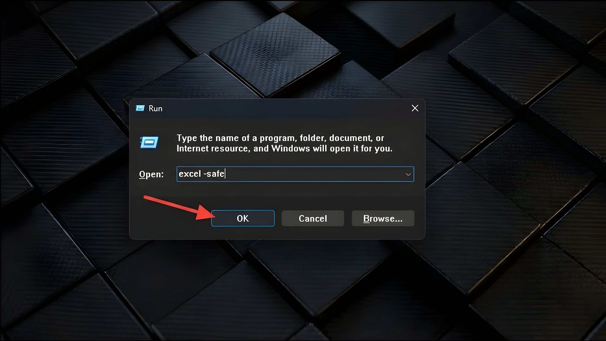
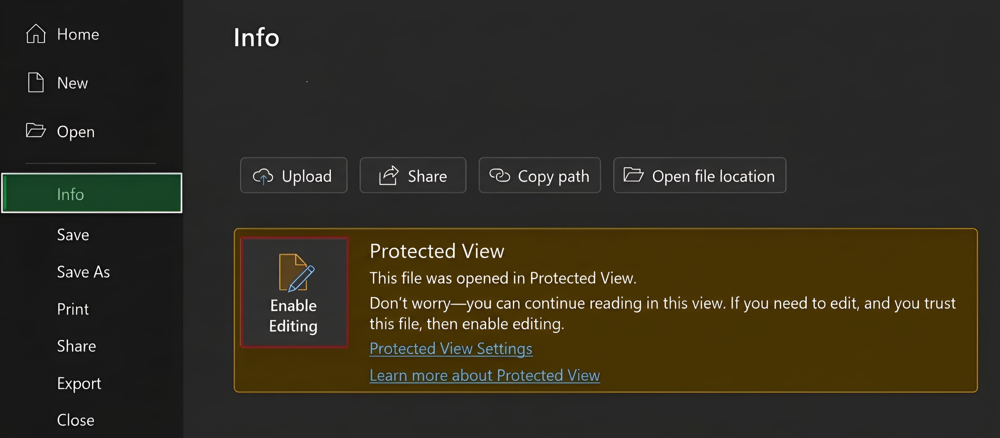
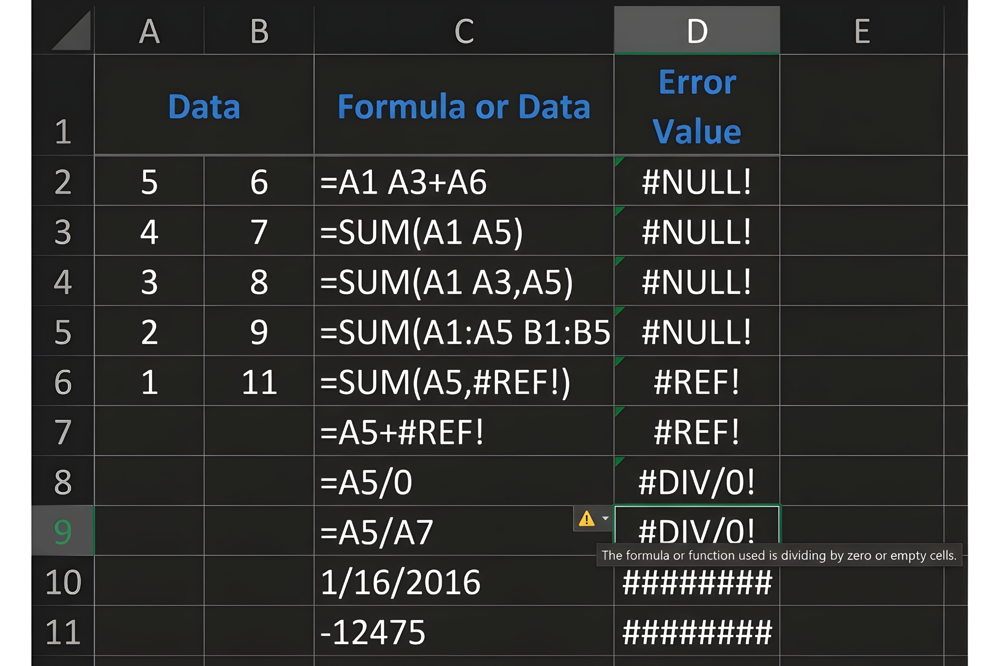
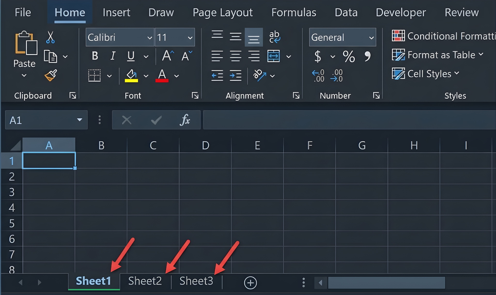
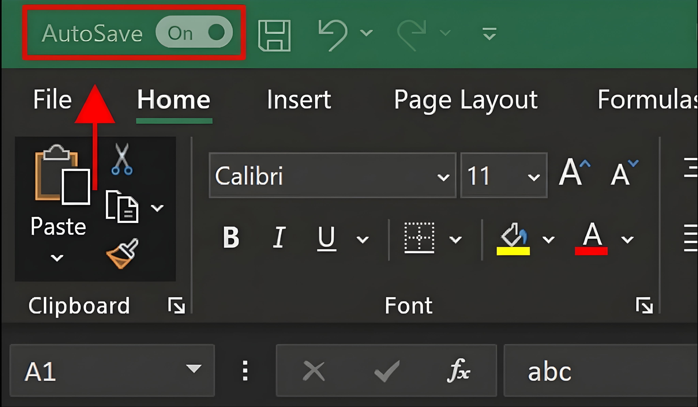
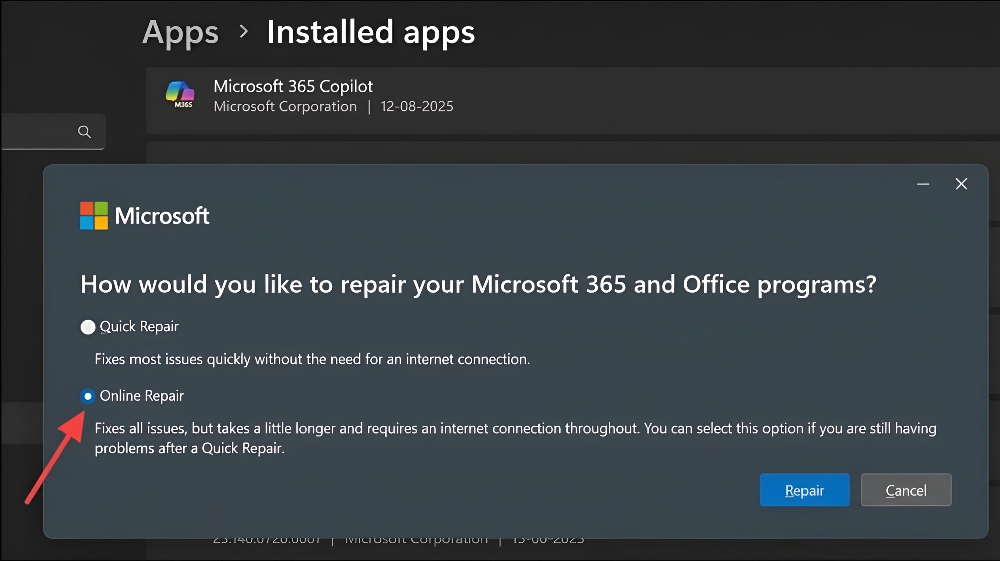

Microsoft Excel not working can mean many different things. The app may refuse to open, freeze while you work, close without warning, or show errors in your formulas. Sometimes the problem is with Excel. In other cases, a workbook, add-in, Windows setting, printer, or internet connection may be the real cause.
This guide explains 20 common Excel problems and shows you what to try. The steps mainly cover the Excel desktop app on Windows. Some menus may look different on Mac or in Excel for the web. When a fix is only for Windows, the guide says so. Before trying any repair that could affect a file, make a separate copy of your important workbook.
Start with the section that matches what you see. You do not need to complete all 20 fixes if Excel has only one problem.
Quick Checks Before You Start
Try these safe checks first. They can solve a temporary problem without changing your Excel settings.
- Save your work if Excel still responds.
- Close other apps that you do not need, then try Excel again.
- Restart your computer if Excel is stuck or behaving strangely.
- Check that your device has enough free storage space.
- Check whether the problem happens with every workbook or only one file.
- Make sure you are using the correct Microsoft account if Excel asks you to sign in.
If only one workbook has a problem, the file may be damaged or may contain heavy formulas, links, or add-ins. If every workbook has the same problem, the Excel app or Office installation may need attention.
20 Common Excel Problems and How to Fix Them
1. Microsoft Excel Won't Open
You click the Excel icon, but nothing happens. Or Excel starts and then disappears. This can happen because of a damaged Office installation, an add-in, an update problem, or a process that is already stuck in the background.
Try these fixes:
- Restart your computer and try opening Excel again.
- On Windows, press Windows + R, type
excel /safe, and press Enter. There is a space before/safe. - If Excel opens in Safe Mode, an add-in or startup setting may be causing the issue. Continue to Problem 11.
- If Safe Mode also fails, install available Office and Windows updates.
- If Excel still will not open, try repairing Microsoft 365 or Office as explained in Problem 16.
Safe Mode starts Excel with some features and add-ins turned off. It is a test, not a permanent replacement for normal mode. See Microsoft's Excel startup troubleshooting steps.
2. Excel Is Not Responding or Keeps Freezing
Excel may show "Not Responding" in its title bar. It may stop reacting when you open a workbook, enter a formula, or refresh data. A large calculation or background task can take time, so do not close Excel immediately if the status bar shows that it is still working.
Try these fixes:
- Wait a short time to see whether Excel finishes its current task.
- If it responds, save a copy of the workbook.
- Open Excel in Safe Mode using
excel /safe. If the freeze stops, test your add-ins one at a time. - Install the latest available Office updates.
- If one workbook causes the freeze, test a copy of that file. Large formulas, too many objects, or complex formatting may be part of the problem.

Important: If Excel has not saved your latest changes, force-closing it may cause you to lose them. Try waiting first.
3. Excel Crashes or Closes Automatically
Excel may close while opening a file, editing a sheet, or using a certain feature. A faulty add-in, damaged workbook, old Office build, or graphics driver issue may be involved.
Try these fixes:
- Check whether Excel crashes with every workbook or only one.
- Start Excel in Safe Mode. If it stays open, disable add-ins and test again.
- Update Office and your operating system.
- If one workbook causes the crash, make a copy and try opening the copy.
- Repair the Office installation if the crash happens with different files.
If the crash began after installing a particular add-in, update it or remove it. Do not delete workbook content as a first step.
4. Excel Is Very Slow
A workbook may take a long time to open, calculate, or respond. Large files, formulas that check entire columns, many hidden objects, too much formatting, and external data connections can all affect performance.
Try these fixes:
- Close other apps and check that your device has enough free memory and storage.
- Update Excel to the latest version available for your installation.
- Check whether the workbook contains formulas that refer to entire columns, many shapes, or unnecessary formatting.
- Test a copy of the workbook before removing unused rows, columns, objects, or formatting.
- If repeated recalculation is slowing a complex workbook, you can test Manual calculation from Formulas > Calculation Options. Remember to switch back to Automatic when finished if you need automatic updates.
Do not remove formulas or data unless you understand what they are used for. A workbook that is slow on one computer may also be limited by that device's hardware.
5. Excel Won't Save a Workbook
Excel may show "Document not saved" or another save error. Common reasons include a full drive, missing folder permission, a lost network connection, or a file that another process is using.
Try these fixes:
- Use File > Save As and save a copy with a new name in a folder on your computer.
- Check that the drive has free space.
- Make sure you have permission to save in the selected folder.
- If the file is on a network drive or cloud folder, check your connection and sync status.
- Close other apps that may be using the same file, then try again.
Save a separate copy before testing other fixes. A new local copy may not keep every feature or the latest change if the original save failed. Microsoft explains common Excel save errors.
6. Excel Cannot Open a Workbook
Excel may show an error when you open one particular file. The workbook could be damaged, incomplete, or stored on a drive that is not available. First check whether other Excel files open normally.
Try these fixes:
- Make a copy of the file before trying to repair it.
- Copy the workbook to a local folder if it is on a USB drive or network location, then try opening the copy.
- In Excel, select File > Open > Browse and select the workbook.
- Select the arrow beside the Open button, then choose Open and Repair.
- Choose Repair. If that does not work, Excel may offer Extract Data to recover values and formulas.
Repair may not recover everything. Keep the original file unchanged and compare the recovered copy with any backup you have. Read Microsoft's workbook recovery guide.
7. Excel Opens a File in Protected View
Protected View opens some files in a safer, read-only mode. Excel may use it for files downloaded from the internet or received from an email. This warning is a security feature, not always an Excel error.
What you can do:
- Check who sent the file and whether you expected it.
- If you do not trust the file or its source, close it without enabling editing.
- If you trust the source and have checked the file, select Enable Editing on the warning bar.
- If editing is still blocked, your organisation's security policy may prevent it. Ask your administrator.

Safety warning: Never enable editing just to remove a warning from an unexpected or suspicious attachment. Learn how Protected View works.
8. Excel File Is Read-Only or You Cannot Edit It
A workbook may open, but you cannot type into cells. It may be read-only, protected, opened in Viewing mode, or shared with view-only permission. A worksheet can also have locked cells.
Try these checks:
- If you see a Protected View message, follow the safety check in Problem 7.
- For a shared workbook, ask the owner to give you edit permission.
- In the desktop app, check Review > Unprotect Sheet if the sheet is protected. You may need the password set by its owner.
- Check File > Info for workbook protection or read-only settings.
- If the file is on a shared drive, confirm that you have permission to change files in that folder.
Do not try to bypass a password or your organisation's access rules. Ask the file owner or administrator for access if needed. See Microsoft's guide to workbook protection.
9. Excel Formulas Are Not Calculating
You enter a formula, but the result does not change when the source numbers change. One possible reason is that the workbook is set to Manual calculation instead of Automatic calculation.
Try these fixes:
- Open the Formulas tab.
- Select Calculation Options.
- Choose Automatic.
- Press F9 to recalculate formulas if needed.
- Check that the formula begins with an equal sign (
=) and that the cell is not displaying the formula as plain text.
If the cell is formatted as Text, change its format to General, then edit and re-enter the formula. Be careful when changing formats in a workbook with dates or special number formats. See Microsoft's formula troubleshooting advice.
10. Excel Shows Formula Errors Such as #VALUE! or #REF!
An error value means Excel could not calculate a formula as written. Different error messages point to different problems.

| Error | Common meaning | What to check |
|---|---|---|
#DIV/0! | A formula divides by zero or an empty cell. | Check the divisor and handle blank or zero values. |
#VALUE! | A formula uses an unexpected type of value. | Check whether numbers, dates, or text are being used correctly. |
#REF! | A cell reference is no longer valid. | Check whether a referenced row, column, or sheet was deleted. |
#NAME? | Excel does not recognise part of the formula. | Check function names and named ranges for spelling errors. |
#N/A | A required value cannot be found or is not available. | Check lookup values and the lookup range. |
##### | The column may be too narrow to show the value. | Widen the column. Negative date or time values can also cause this display. |
Select the cell with the error and inspect the formula bar. Check cell references, spelling, data types, and ranges before changing the formula. Microsoft's guide explains common formula errors.
11. Excel Add-Ins Are Causing Problems
Add-ins add extra tools to Excel. An old or faulty add-in can sometimes stop Excel from opening, slow it down, or cause it to crash.
Test add-ins on Windows:
- Open Excel in Safe Mode by running
excel /safe. - If Excel works normally in Safe Mode, open File > Options > Add-ins.
- At the Manage box, select COM Add-ins and choose Go.
- Clear the check boxes to turn off the listed COM add-ins, then select OK.
- Restart Excel normally. If the problem is gone, turn add-ins back on one at a time to find the one causing it.
- Update or remove the add-in that causes the problem, if you do not need it.
Menu options can differ by Excel version. If your work or school manages the add-ins, contact your IT administrator before changing them.
12. Excel Workbook Links Are Not Updating
A workbook can use values from another Excel file. If the source file has moved, been renamed, or is not available, linked values may not update. Excel may also show a security warning before refreshing links.
Try these fixes:
- Check that the source workbook still exists and that you can open it.
- Open the destination workbook and review any link update message.
- If you trust the source file, choose the appropriate update option.
- In supported desktop versions, open Data > Workbook Links to review or change the source.
- If the source file was moved, update the link to its new location.
Do not approve links from a file you do not trust. Old or incorrect linked values can affect reports and calculations. Learn how to manage workbook links.
13. Excel Worksheet Tabs Are Missing
The sheet names normally appear along the bottom of an Excel workbook. If they disappear, the tabs may be hidden by a setting, the horizontal scroll bar, or the workbook window.

Try these fixes on Windows desktop Excel:
- Maximise the Excel window to see whether the tabs return.
- Go to File > Options > Advanced.
- Under Display options for this workbook, make sure Show sheet tabs is selected.
- If the horizontal scroll bar covers the tabs, drag the divider beside it to make more room.
- If only one sheet is missing, right-click a visible tab and choose Unhide, if that option is available.
A sheet may be hidden rather than deleted. If it is protected or hidden by an organisation's workbook settings, ask the file owner for help. See Microsoft's worksheet tab guide.
14. Excel Will Not Print a Worksheet
Excel may send a blank page, print the wrong sheet, or fail to print. The cause may be the selected printer, print area, page settings, printer driver, or Windows print service.
Try these fixes:
- Press Ctrl + P and check the printer selected in Excel.
- Check whether Excel is set to print the active sheet, the whole workbook, or only a selection.
- Review the print area and page orientation in Page Layout.
- Try printing a different workbook or a test page from another app.
- If other apps also cannot print, troubleshoot the printer and its driver in Windows.
- Restart Excel and the printer. If the issue only happens in Office, consider repairing Office.
If the print preview is correct but paper output is not, the printer or its driver may be the cause rather than the worksheet. Read Microsoft's printing troubleshooting guide.
15. Excel AutoSave Is Turned Off or Not Working
AutoSave is not available for every file or storage location. In Microsoft 365, it is designed for supported files saved to OneDrive or SharePoint. A file saved only on your computer may not show AutoSave as available.

Try these checks:
- Confirm that you are signed in to the correct Microsoft 365 account.
- Save the workbook to OneDrive or SharePoint from inside Excel.
- Check that OneDrive is signed in and syncing.
- Check the file type. Some older formats, such as .xls, and some workbook features do not support AutoSave.
- Check whether the file is read-only or whether you have permission to edit it.
AutoSave is different from AutoRecover. AutoRecover can help restore unsaved work after a problem, but it should not replace regular saving. See how to turn on AutoSave.
16. Excel Needs Repair or Office Apps Are Not Working Properly
If Excel keeps failing even after updates and Safe Mode tests, some Office program files may be damaged. On Windows, you can use the built-in repair option. This repairs the Office installation, not just one workbook.
Repair Microsoft 365 or Office on Windows:
- Save your work and close all Office apps.
- Open Windows Settings and go to Apps > Installed apps. The exact menu name can vary by Windows version.
- Find Microsoft 365 or your Office installation.
- Open its menu and select Modify.
- Try Quick Repair first, then follow the on-screen instructions.
- If the problem remains, run Online Repair. This may take longer and requires an internet connection.
- Restart Windows and test Excel again.

Repair options and names may differ depending on how Office was installed. If this is a work or school computer, ask your administrator before changing the installation. Follow Microsoft's Office repair instructions.
17. Excel Shows "Unlicensed Product" or Activation Errors
If Excel displays "Unlicensed Product" or asks you to activate Office, some features may be disabled. This can happen if you are signed in with the wrong account, your subscription has expired, or Office cannot complete activation.
Try these checks:
- Open Excel and check which Microsoft account is signed in.
- Sign in with the account that owns the Office licence or Microsoft 365 subscription.
- Check your subscription or one-time licence status in your Microsoft account.
- Check that your computer's date, time, and time zone are correct.
- Check your internet connection and install available Office updates.
- If more than one Office version is installed, check whether an unused installation is causing a conflict before removing anything.
Do not buy another licence until you have checked which account and product you already own. Work or school licences may be managed by an organisation. See Microsoft's activation help.
18. Excel Macros Are Not Running
A macro is a set of instructions that can automate tasks in Excel. Macros may be blocked because of security settings, the file type, or the source of the workbook. This protection helps prevent harmful code from running without your knowledge.
What to check:
- Check whether the workbook is saved in a macro-enabled format such as
.xlsm. - Look for a security message when the workbook opens.
- Only allow macros if you trust the file and know where it came from.
- If the file is from your workplace, ask the IT administrator about its macro policy.
- Ask the macro creator whether the code supports your Excel version and platform.
Safety warning: Do not set Excel to allow all macros just to make one file work. A macro from an unknown source can harm your computer or expose data. Learn about Excel macro security settings.
19. Excel Cannot Refresh External Data
Some workbooks get information from databases, websites, other files, or online services. If a refresh fails, the source may be offline, your access may have changed, or the connection may be disabled.
Try these fixes:
- Check your internet or network connection if the source is online.
- Confirm that the source file or database is available.
- Check that you still have permission to access the data.
- In desktop Excel, open Data > Queries & Connections and review the connection status.
- Check the connection properties to see whether refresh is allowed and whether the source path is correct.
- If Excel shows a security warning, only enable the connection if you trust the workbook and data source.
If the data comes from a work system, the administrator may need to restore access or update the connection details. Read about Excel connection properties.
20. Excel Says the File Extension Does Not Match the File Format
This warning means the file name ending, such as .xlsx,
does not match the format Excel detects inside the file. The file may
have been renamed incorrectly, exported by another program, or saved
in a different format.
Try these checks:
- Confirm who created the file and which program was used to make it.
- Ask the sender to export or save it again in a proper Excel format.
- Do not change the extension by guessing. Renaming
.csvto.xlsx, for example, does not convert the file. - If you trust the file and understand its source, follow Excel's warning carefully. If you are unsure, do not open it.
- When the file opens correctly, use File > Save As to save a copy in the correct format.
A file extension mismatch can be a simple naming mistake, but it can also be a sign that the file is not what you expected. Check its source before opening it. See Microsoft's explanation of this warning.
What If None of These Fixes Work?
If Excel is still not working, collect a few details before asking for more help. This makes it easier to find the real cause.
- Write down the exact error message, if one appears.
- Check your Excel version under File > Account > About Excel on Windows, where available.
- Note whether the issue happens with every workbook or only one.
- Check whether Excel works in Safe Mode.
- Try the workbook on another trusted device, if you can do so safely.
- Contact Microsoft Support or your organisation's IT team if the problem continues.
If the issue affects an important or damaged workbook, keep the original file and any backups. Avoid running unknown repair tools or uploading private spreadsheets to websites you do not trust.
How to Prevent Microsoft Excel Problems
You cannot prevent every Excel error, but a few habits can reduce the chance of losing work or running into common issues.
- Save important work regularly and keep backup copies.
- Install Office updates when they are available.
- Use add-ins from sources you trust and remove ones you no longer need.
- Keep enough free space on your computer and cloud storage.
- Use OneDrive or SharePoint AutoSave when your file and account support it.
- Do not unplug a USB drive while a workbook stored on it is open.
- Be careful with unexpected files, macros, and external links.
- Use a suitable Excel file format for the features in your workbook.
Frequently Asked Questions
Why is Microsoft Excel not working today?
There is no single cause. Excel may be affected by an app update, an add-in, a damaged workbook, a device issue, or a network or account problem. Check whether the issue happens with all workbooks or only one.
How do I fix Excel when it is not responding?
Wait briefly if Excel is still processing, then try restarting your
computer. If the problem returns, open Excel in Safe Mode using
excel /safe on Windows to test whether an add-in or startup
setting is involved.
Will repairing Office delete my Excel files?
Office repair is designed to repair the Office installation, not erase your workbook files. Still, save your work and make backups before changing software or settings. Work or school devices may have managed repair options.
Why does Excel open in Protected View?
Excel may open files from the internet, email attachments, or other potentially unsafe locations in Protected View. This helps protect your device. Only select Enable Editing when you trust the file and its source.
Why are my Excel formulas not updating?
The workbook may use Manual calculation. In desktop Excel, open Formulas > Calculation Options and choose Automatic. Also check that the formula is entered correctly and that its source cells contain the expected values.
Can I fix Excel problems without reinstalling it?
Often, yes. Try restarting the computer, testing Safe Mode, checking add-ins, updating Office, and repairing the installation before considering a full reinstall.
Do these solutions work on Mac and Excel for the web?
Some general checks apply to all versions, but many menu paths in this guide are for Windows desktop Excel. Excel for Mac and Excel for the web have different menus and may not support every desktop feature. Use the support instructions for your version when a Windows-only step does not apply.
Is it safe to download an Excel repair tool from another website?
Be careful. Unknown repair tools may contain unwanted software or put private workbook data at risk. Start with Microsoft's built-in Open and Repair option, Office repair, and official support resources.
Final Thoughts
When Microsoft Excel is not working, the best fix depends on what is going wrong. A frozen app, a broken formula, a read-only workbook, and a failed save are different problems, so they need different solutions.
Start with the safest checks, test whether the problem affects one file or all files, and follow the steps for the error you see. Keep a backup before repairing an important workbook, and only trust files, links, and macros from sources you know.
For more help, visit Microsoft Excel Support or browse the Apps & Software section on Zoon Labss.